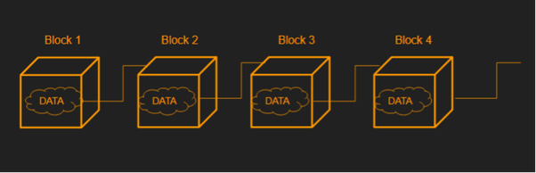
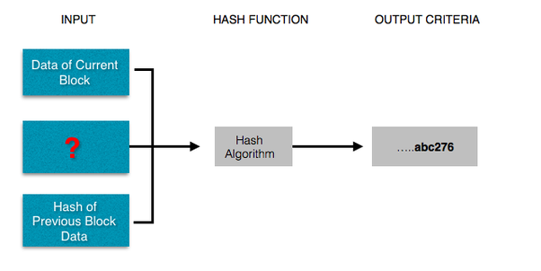
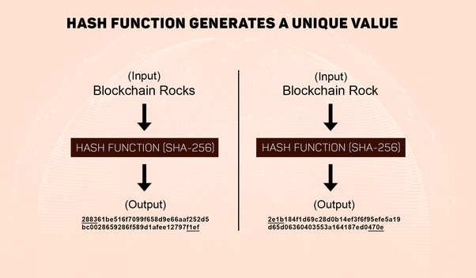

🔗 BLOCKCHAIN
Blockchain has taken the world by storm. It feels like the early days of Internet. Every smart person out there is thinking of building X on Blockchain, just like the smart people of 90s were thinking of building X on the Internet.
Bitcoins and Blockchain the buzzwords of the year. Even the people who’ve never mined a cryptocurrency or understand how it works, are talking about it. I have more non-technical friends than technical ones. They have been bugging me for weeks to explain this new buzzword to them. I guess there are thousands out there who feel the same
written in plain english that any regular internet user understands ;
October 31, 2008, a white paper from an anonymous person or organization named Satoshi Nakamoto was published which explained a novel approach to send money from sender to receiver directly without involving any financial intermediaries. The paper gave a name to this concept — Bitcoin. Since, Bitcoin uses some underlying concepts of cryptography, this new way of exchanging money was categorized as cryptocurrency. The only purpose of Bitcoin was for financial transactions but researchers realized that its foundational technology can be harvested to build other secure and robust applications that can revolutionize the way current systems work.
You can’t discuss the history of blockchain technology without first starting with a discussion about Bitcoin. Blockchain provided the answer to digital trust because it records important information in a public space and doesn’t allow anyone to remove it. It’s transparent, time-stamped and decentralized.
“Blockchain is to Bitcoin, what the internet is to email. A big electronic system, on top of which you can build applications. Currency is just one”
SO , What is Blockchain?
— A Real World Analogy
Let’s imagine that you live in a city, which has a big parking space to park 200 cars at one time (assume that the parking space just has a ground floor). This parking space has a main gate which stays locked and is only opened when a car moves in or out. Now let’s analyze this single parking building from different points of view —
Price:
Since some private company built this parking space exclusively for parking purposes and all the maintenance cost will be beared by the owner company, there will be a high renting fee for renting out a single parking space.
Security:
If thieves get access to the main door, they can easily get to your car (take its wheels, or fuel, or damage the brake, anything!)
Limit:
What if the number of cars in your city grow from 200 to 300? The parking space will not have enough space for all cars and some other private agency will have to built a new parking space.
Trusted:
You trust the parking space company and they are responsible for taking care of security and reliability.
Centralized:
Since all the cars are in one building, we can consider it to be a centralized parking.
Now, let’s modify the current scenario. Imagine that there are 200 houses in your city and all 200 houses have two garages each. However, to simplify our explanation, let’s assume each house just has one car (all cars filling up all the slots of big parking space described above). So, each house has one empty garage out of the two garages available. Now, let’s say people of the city decide to rent out the extra garage to anyone who needs a parking. This model of providing parking space will solve the problem of parking 200 cars or more cars (in case people move in and out of the city) without the need of building any central bigger parking space for the entire city. Similar to the previous scenario, let’s analyze this scenario —
Price:
Since people didn’t built the second garage exclusively for renting purposes and the cost of maintenance will be little, the cost to rent that extra space will be low comparatively to the big central parking space.
Security:
Each car is locked in a different garage therefore thieves will have to unlock all the garages to get access to the cars, thus providing more security. (Security in blockchain is a bit different but for simplicity let’s consider it this way for now!)
Limit:
As the number of houses grow, assuming each new house also has extra garage space, the space to keep more cars will keep increasing. Thus, increasing the network of lessee and lessor.
Trustless:
Since, no central authority controls these distributed parking spaces, we assume that there will be certain rules set by all the participating garage owners for renting out their places.
Decentralized:
As mentioned in the previous point, these parking spaces are distributed throughout the city, we can consider it to be a decentralized parking.
The above analogy provides the foundation for understanding the actual technical infrastructure of the Blockchain.
Parking Model to Technical Model
The parking model presents a very basic overview of Blockchain in some real world language. Now, let’s try to match the components of our parking example to the actual technical model —
The big central parking is a centralized system like AWS, Google Cloud etc. (these cloud platforms are also distributed at some level but for the sake of simplicity, we will assume them to be a single entity).
The cars are the data and applications.
The distributed parking is a decentralized system — Blockchain.
Wait ! We missed something.
All decentralized systems are not Blockchain!! Yes, Blockchain is a particular type of decentralized system that has a unique property. Which property? Let’s talk about it.
“Blocks” make Blockchain :
Let’s revisit our distributed parking example and make a small change. Let’s assume that the lock to a particular garage is generated when a car is parked inside it (we assume that the same car goes to the same parking everyday). Also, assume that we have numbered all the distributed garages in serial order. The lock-key pair of garage #50 is based on the lock-key pair of garage #49 and also on the features (like color, weight, engine number etc.) of the car parked inside garage #50 and this process starts from garage #1 and moves till garage #200 or even more.
Each garage’s lock-key pair depends on the garage’s car features and previous garage’s lock-key pair.
Therefore, if a thief tries to break into garage #49 and modifies any feature of the car, say its color or registration number, the features of car in garage #49 will change which means a new lock-key pair for garage #49 will be generated and since lock-key-pair for garage #50 depends on lock-key pair of garage #49, lock-key pair for garage #50 will also change and same goes on for future garages.
Now, let’s make one last assumption that computing a lock-key pair requires lots of computing resources which means if we have to recompute these pairs in case any thief modifies any car feature in any garage, it will be practically impossible to recompute all the pairs again.
What happens if a lock-key pair is changed?
Hope you remember that we talked about all garage owners abiding by some rules? One of these rules is to check for a valid garage. A garage is valid if you can validate its lock-key pair and if any lock-key pair gets changed, the lock-key pairs of all the following garages get invalid because every pair depends on the previous pair. (Process to validate a lock-key pair for a particular garage is very fast as compared to generating one).
This dependence of one pair on the previous pair makes it a chain of garages and in technical world, these garages are “blocks”, thus getting its name — Blockchain (a chain of blocks).

Blocks in Blockchain are tied to the next block by hashes just like lock-key pairs in our example. Similar to garage example, if data in one block is modified, hashes need to be recalculated for all the following blocks and since calculating the hash is a very resource intensive operation, it gets practically impossible to do that and hence the network rules out the invalidated block. The calculation of hash is called mining
51% of the power…
What do we mean by owning 51% of the power in the system? The system works when people in the system spends CPU power and electricity to solve mathematical problems. The first one to solve it gets rewarded in the cryptocurrency denominations (coins). The mathematical problems are such that when solved, it makes sure that the history of transactions cannot be rewritten.
To rewrite the history of transactions happening on the Blockchain needs the culprit to change not only the transaction in the past but also all the transactions after that. While everyone is at work to lengthen the chain, it is practically impossible for one person to rewrite the whole chain.
But what if, the majority of the workers decide to turn dishonest and rewrite the chain in a manner that favors them? The chain gets re-written.
And that’s the problem with Blockchains.
It anyone can gather the 51% of the power in a Blockchain, he can misuse the system in his favor.
However, the general assumption is that the pool of users using the Blockchain is large and diversified the chances of the 51% attack are low.
How does BlockChain work?
Block chain employs the use of (a) hash algorithms (eg. SHA-256), (b) chaining of hashed blocks, and (c) peer-to-peer distributed database for a robust and secure record keeping mechanism, making malicious alteration of records infeasible (i.e. highly expensive computationally).
The Building Blocks of BlockChain
Hashing
In order to understand BlockChain we must first understand Hashing Algorithms. A Hash function is a mathematical function which takes an input and produces an output. i.e. Y= H(X) , where X is the input, H() is the hash function, and Y is the output.
Hash functions have the following special properties,
Hash functions are one-way:
Given an input, the hash function can generate a “hashed” output very quickly. However it is infeasible to reverse engineer the input from the output, i.e. given an output (i.e. hashed string), it is infeasible to determine the input that generated that output.

The Hash output is always a fixed length:
The output is always a fixed length, irrespective of the size of the input string.Bitcoin is no longer the only Blockchain platform with wide-scale adoption. A comprehensive Blockchain ecosystem has emerged astonishing momentum in the past five years. According to Blockchain specialist and venture capitalist Josh Nassbaum, “the speed of blockchain’s growth is the fastest that any area of technology has taken off”
BlockChain technology and Hashing Algorithms
BlockChain technology employs Hashing Algorithms as the building blocks to create secure Blocks of data.In a overly simplified explination, it does this by asking the following question
Given a hashed output with some criteria, can you determine what input will generate that output? i.e. What input string, when passed through a hashing function (eg. SHA256), will generate an output string that ends in …..abc276

Given the nature of hashing algorithms (i.e. hashing algorithms are one-way), we know that to answer this question is difficult, and will possibly require brute force approach, which would translate to a great deal of computing power. After trying several million different combinations of inputs, finally one input string may generate an output string like ed892349837abd2349abc276, which will finally match the criteria.
The Block and the BlockChain
Now that we understand how hashing algorithms are used in BlockChain technology, let’s take a step back now and understand what is a “Block” and the “BlockChain”.
In simplistic terms, a Block in a BlockChain consists of three main components.
Data , this could be any digital asset eg. transactional records, medical records etc. that we want to preserve, and prevent any unintended tampering/alterations. The type of data (digital asset) stored in the block is determined by the type of BlockChain i.e. BitCoin Blockchain stores transactional records. Other Blockchains might store voting records etc. )
“Hash” of the Current Block, a unique fingerprint of the block, generated using a Hashing Algorithm, eg. SHA256. If using the Hash algorithm generates a different hash than the one recorded on the block, then we know that that Block has been altered (and should be discarded).
“Hash” of the Previous Block, (The Hash of the previous block + the data of the current Block (+ the Proof-of-Work(PoW)) is used to generate the Hash of the current Block. i.e.
Hash of current Block = Hash( Hash of Previous Block + Data in Current Block + PoW). This is how the Blocks become “linked” in a BlockChain. Note: The first Block of the Block chain is called in the “Genesis Block”.

Every Block in the BlockChain is “sealed” with a hash signature. This hash signature is generated by passing three components to any predefined hashing algorithm.
1.Data in the Current Block
2.Proof-of-Work (obtained through the “mining” process)
3.Hash of the previous Block
To verify the integrity of the Block, any user can simply check the “sealing” hash signature on the Block and compare it with the “hash” generated by passing the above three components through the hashing algorithm.
The BlockChain technology is a technique that is built on the building blocks of hashing algorithms, chaining using previous block hash, and distributed databases. All these principles are combined together and reinforce each other to allow for BlockChain technology to create a distributed repository of secure, un-alterable, record keeping
The Internet of Transactions
Blockchain is not a ‘new’ internet, nor is it trying to replace the internet. By deploying a decentralised, hash-based protocol with an indelible ledger, Blockchain is offering a powerful alternative to the internet processes that have become routine since the widespread adoption of the World Wide Web.
By connecting centralised servers capable of storing massive amounts of data to a graphical user interface that allowed humans to easily read and interact with that data, the World Wide Web ushered in an internet of information that fundamentally changed the way we access and store information.
Blockchain has the potential to effect the same revolution, but for transactions. If its potential is realised correctly, we could trade stocks, buy homes, and play fantasy football on the Blockchain with the same security and ease with which we watch cat videos on YouTube.
I hope this article prepared you for some good discussion with your friends regarding Blockchain.
If you ever find someone feeling left behind and wondering, “WHAT IS BLOCKCHAIN?” you know where you can point them to.
Found this post useful ?
Peace 🥂